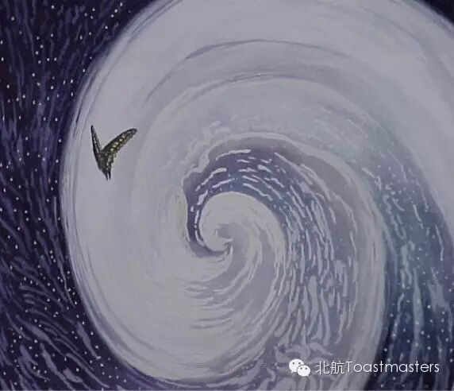
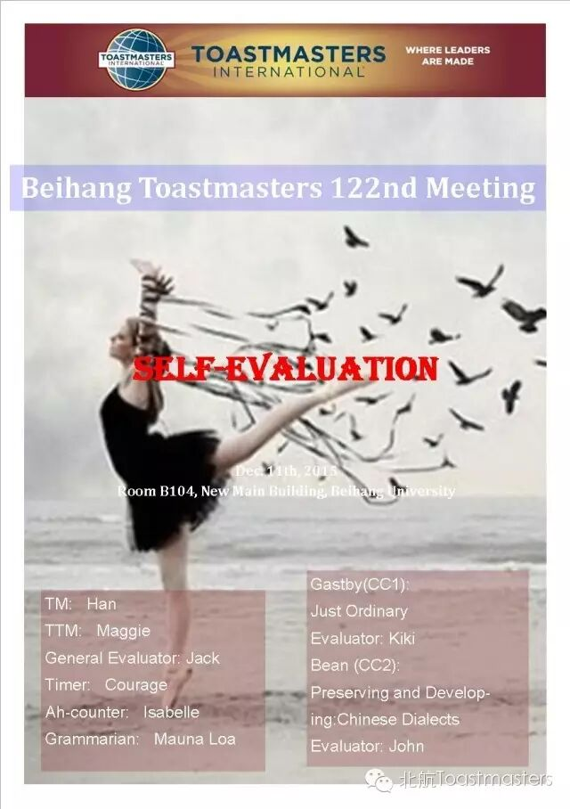
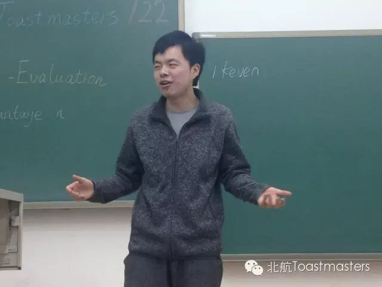
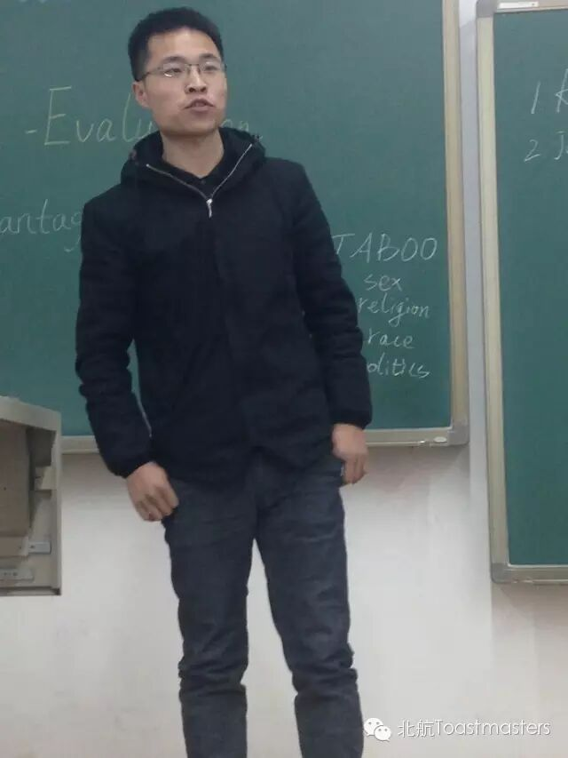
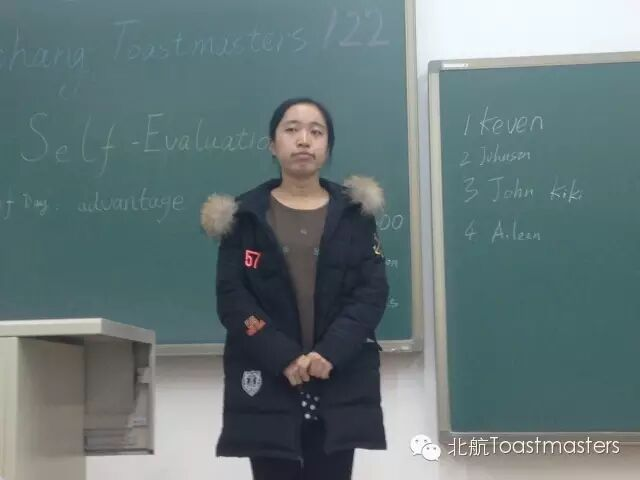
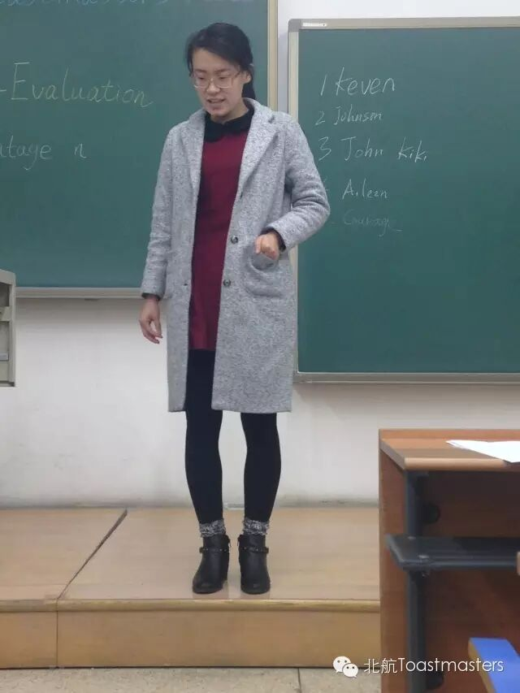
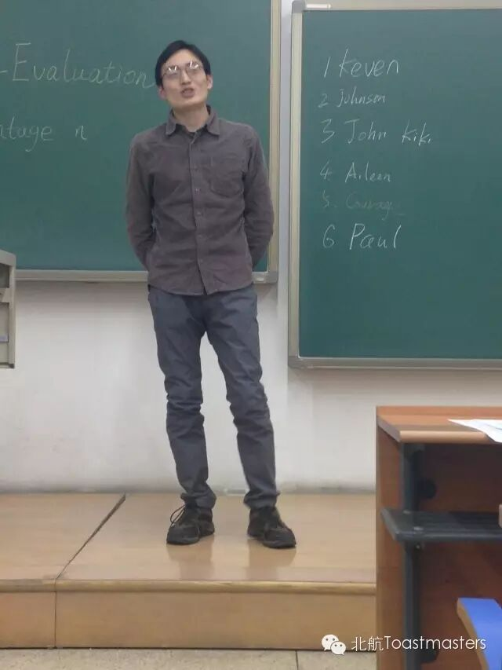
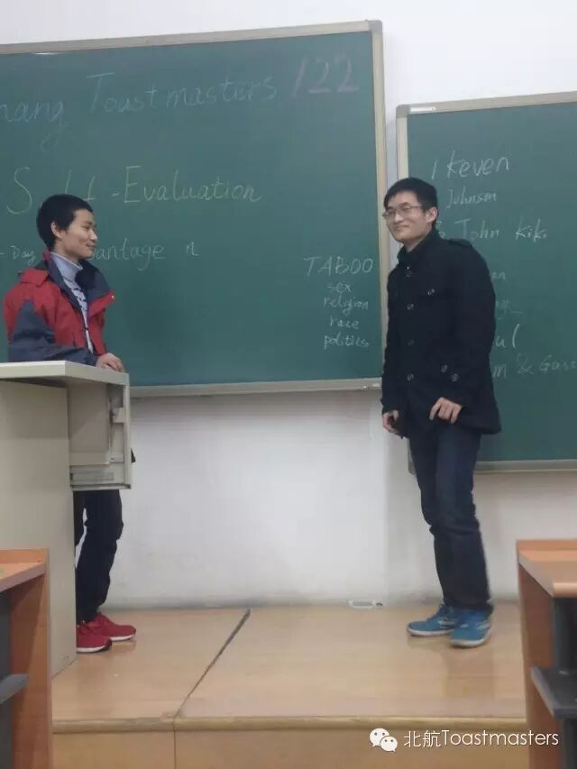
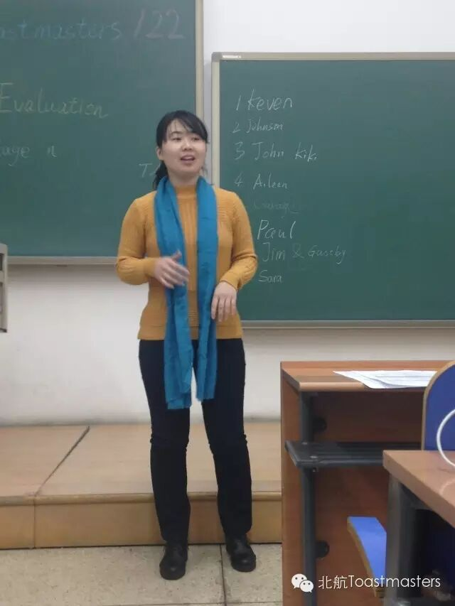
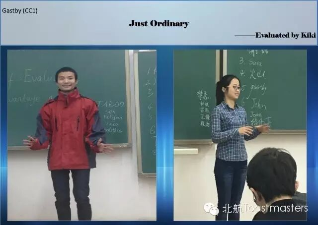
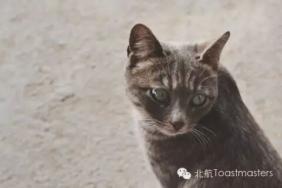
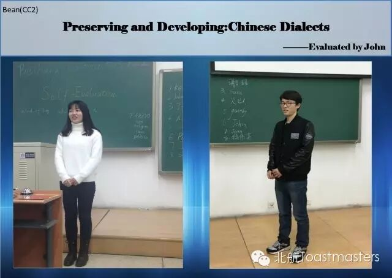

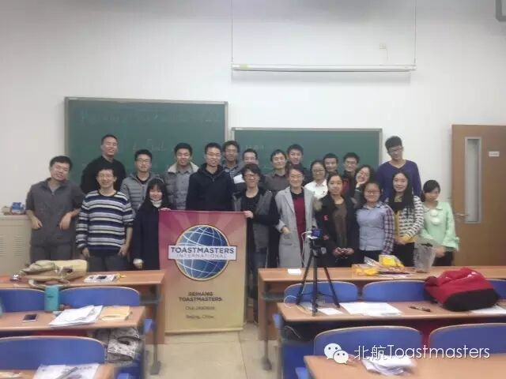
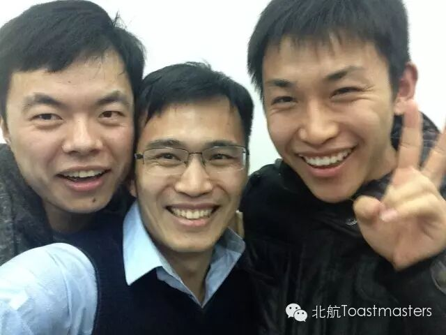
原文链接（公众号关闭后可能失效）：
https://mp.weixin.qq.com/s/MTgnw_vV0ieD6ptT4WuZIA
https://mp.weixin.qq.com/s/MTgnw_vV0ieD6ptT4WuZIA
第 215/539 篇 · 北航Toastmasters英文演讲俱乐部公众号存档
本页为抢救式本地归档，图文已永久保存。
本页为抢救式本地归档，图文已永久保存。